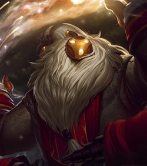

Leia a história completa

Leia a História completa
Leia a História completa

Leia a História completa
Leia a História completa

Leia a História completa

Leia a História completa

Leia a História completa

Leia a História completa

Leia a História completa
| Campeão | História |
|---|---|
| Aatrox |
Antes defensores honrados de Shurima contra o temido Vazio, Aatrox e sua raça no fim se tornaram uma ameaça ainda maior para Runeterra e a única coisa capaz de derrotá-los foi um tipo de feitiçaria mortal e traiçoeira. Mas após séculos de encarceramento, Aatrox foi o primeiro a encontrar a liberdade novamente, corrompendo e transformando qualquer tolo que tentasse empunhar a arma mágica que continha sua essência. Agora, com um corpo roubado, ele vaga por Runeterra transfigurado, em uma versão bizarra da sua forma anterior, buscando uma vingança apocalíptica. Leia a história completa |
| Annie |
Perigosa, mas adoravelmente precoce, Annie é uma pequena maga com imenso poder piromaníaco. Mesmo isolada nas sombras das montanhas ao norte de Noxus, ela causa estranhamento com sua magia. Sua afinidade natural com o fogo já era evidente desde a primeira infância, quando ela tinha explosões emocionais imprevisíveis. Apesar disso, ela aprendeu a controlar esses “truques divertidos”. Seu truque favorito inclui invocar seu amado ursinho de pelúcia, Tibbers, como protetor incendiário. Perdida na eterna inocência da infância, Annie vaga pelas florestas sombrias em busca de alguém para brincar. Leia a História completa |
| Aphelios |
Emergindo da sombra do luar com suas armas em mãos, Aphelios abate os inimigos de sua fé em absoluto silêncio, comunicando-se apenas pela destreza de sua mira e o disparo de cada arma. Embora viva sob o efeito de um veneno que o emudeceu, ele é guiado por sua irmã Alune, que habita um santuário distante de onde invoca um arsenal de armas de pedra da lua para ajudá-lo. Enquanto a Lua brilhar no céu, Aphelios nunca estará sozinho. Leia a História completa |
| Aurelion Sol |
Aurelion Sol costumava agraciar a vasta imensidão vazia do reino celestial com maravilhas criadas por ele, mas foi enganado pelos Aspectos de Targon e forçado a revelar os segredos de um sol que ele mesmo criara. Seu incrível poder foi canalizado em deuses-guerreiros imortais para proteger o aparentemente insignificante mundo de Runeterra. Agora, desejando retornar à sua majestade cósmica, Aurelion Sol seria capaz de arrastar até as próprias estrelas do céu para recuperar sua liberdade. Leia a História completa |
| Bardo |
Vindo de além das estrelas, Bardo é um agente do acaso que se esforça para manter a harmonia entre a criação e a fria indiferença do que ela não pode ver. Muitos habitantes de Runeterra cantam canções que ponderam sobre sua natureza extraordinária, mas todos concordam que o nômade cósmico é atraído por artefatos de grande poder mágico. Cercado por um coro jubilante de mipes companheiros, é impossível interpretar suas ações como maliciosas, pois, à sua própria maneira estranha, Bardo sempre serve ao bem maior. Leia a História completa |
| Bel'Veth |
Uma imperatriz apavorante, criada a partir da matéria-prima de uma cidade inteira devorada, Bel'Veth é o fim da própria Runeterra... e o começo de uma realidade monstruosa que ela mesma criou. Guiada por eras de história, conhecimento e lembranças adaptadas do mundo superior, ela alimenta com voracidade uma necessidade incontrolável por novas experiências e emoções, consumindo tudo que cruza o seu caminho. Mas seus desejos jamais serão saciados por apenas um mundo, e é por isso que ela volta seus olhos famintos para os antigos mestres do Vazio... Leia a História completa |
| Camille |
Munida para operar além dos limites da lei, Camille é a chefe de inteligência do Clã Ferros, uma elegante agente de elite responsável pelo bom funcionamento da engrenagem de Piltover e da cidade baixa de Zaun. Adaptável e precisa, ela vê técnicas medíocres como uma vergonha que deve ser eliminada. Com uma mente tão afiada quanto suas lâminas, a busca de Camille por superioridade usando aprimoramentos hextec em seu corpo faz com que muitos se perguntem se agora ela é mais máquina do que humana. Leia a História completa |
| Diana |
Com uma brilhante armadura da cor da neve invernal na madrugada e empunhando sua espada lunar crescente, Diana é a personificação do poder da lua prateada. Dotada com a essência de um Aspecto vindo de além do cume de Targon, Diana já não é mais totalmente humana e luta para entender seu poder e propósito neste mundo. Leia a História completa |
| Ekko |
Um prodígio das violentas ruas de Zaun, Ekko manipula o tempo para reverter qualquer situação a seu favor. Usando sua própria invenção, o Revo-Z, ele explora as possíveis bifurcações da realidade para criar o momento perfeito. Embora valorize muito sua liberdade, quando algo ameaça seus amigos, ele não mede esforços para defendê-los. Para meros observadores, Ekko parece conseguir o impossível sempre de primeira. Leia a História completa |
| Fiddlesticks |
Algo despertou em Runeterra. Algo ancestral. Algo terrível. O eterno terror conhecido como Fiddlesticks vaga pelos confins do mundo mortal, atraído por áreas dominadas por uma paranoia palpável, onde se alimenta de vítimas apavoradas. Com sua foice afiada, essa criatura malformada e desgastada colhe a própria essência do medo, deixando as mentes dos desafortunados que sobrevivem ao seu ataque totalmente fragmentadas. Muito cuidado com o som dos corvos, ou com os sussurros de uma figura que parece quase humana... pois Fiddlesticks está de volta. Leia a História completa |